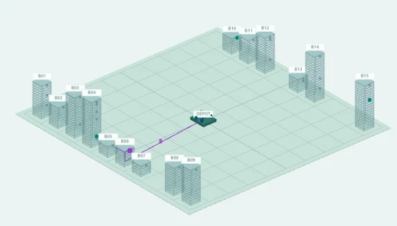

Latest results
Compare policies across the four instances and inspect their routes and schedules.
Who should make the next home visit? Follow nurses through a shift in a densely populated community and see how dispatch decisions affect travel, waiting and the number of visits completed.
Try the simulator
Zhang and colleagues studied how to schedule home care for older residents in dense neighbourhoods. Their model accounts for appointment windows, nurse qualifications and uncertain service durations. It also examines how familiarity and preferences between nurses and patients can affect how long a visit takes.
Zhang, T., Liu, Y., Yang, X., Chen, J., & Huang, J. (2023). Computers & Industrial Engineering, 182, 109332. Read the open-access paper.
This project uses four benchmark instances from the study to simulate a shift in SimPy. Nurses travel, wait for appointment windows and provide care concurrently. The dispatcher makes one decision at a time, and the simulation clock advances to the next event when no decision is pending.
The research simulator compares fixed dispatch rules and ant colony optimisation with two reinforcement learning algorithms, DQN and PPO. In the browser version, you make the assignments yourself and follow the routes in 3D.
Compare policies across the four instances and inspect their routes and schedules.
See what the agents observe, which actions they can take and how they are trained and evaluated.
Follow the research decisions and performance changes across experiment rounds.
Dispatch nurses during a shift and watch them travel to buildings and floors.